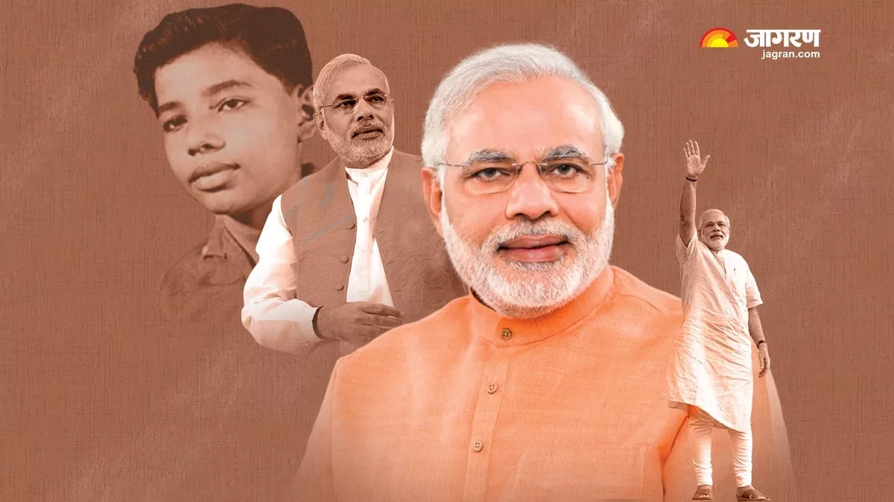

Narendra Modi
NDM
14th Prime Minister of India Incumbent
Modi was born 17 September (1950) and raised in Vadnagar in northeastern Gujarat , where he completed his secondary education.
He was introduced to the RSS at age eight. He has reminisced about helping out after school at his father's tea stall at the Vadnagar railway station. At age 18, Modi was married to Jashodaben Chimanlal Modi , whom he abandoned soon after. He first publicly acknowledged her as his wife more than four decades later when required to do so by Indian law, but has made no contact with her since.
Modi has asserted he had travelled in northern India for two years after leaving his parental home, visiting a number of religious centres, but few details of his travels have emerged. Upon his return to Gujarat in 1971, he became a full-time worker for the RSS. After the state of emergency was declared by prime minister Indira Gandhi in 1975 , Modi went into hiding. The RSS assigned him to the BJP in 1985 and he held several positions within the party hierarchy until 2001, rising to the rank of general secretary.
Political Career of Narendra Modi
Narendra Modi always had the utmost zeal and enthusiasm to serve and help the people in need. As a young boy, Narendra Modi offered his services voluntarily to the soldiers at the railway stations during the Indo-Pak war in 1965. He also served affected people during the 1967 Gujarat floods. Modi started working in the Gujarat State Road Transport Corporation’s staff canteen. Eventually from there he became a full-time proponent and campaigner, commonly called a 'pracharak', of the RSS. Modi later underwent training at the RSS camp in Nagpur. It is a prerequisite for any RSS member to take up the training course for holding any official position in the Sangh Parivar. Narendra Modi was given charge of the student wing, which is better known as Akhil Bharatiya Vidyarthi Parishad (ABVP). His contribution to the Anti-emergency movement impressed senior political leaders. As a result of this, he was eventually appointed the regional organiser of the newly-formed Bharatiya Janata Party in Gujarat.


.jpg)